Creación Bodega Marqués de Riscal
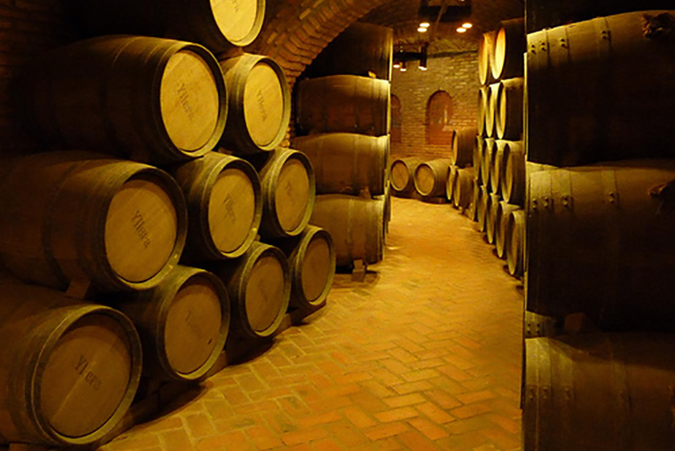Primeros Caldos Embotellados y Primeros Premios
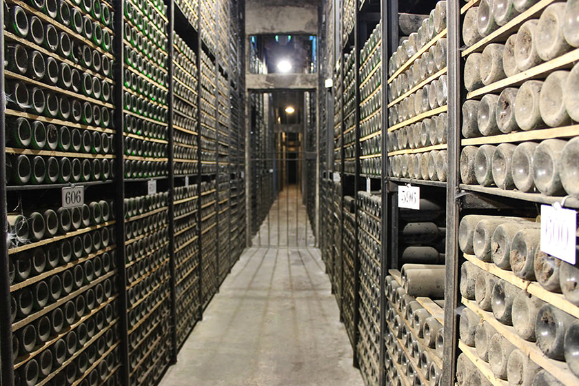Primera Ampliación de la bodega de Marqués de Riscal
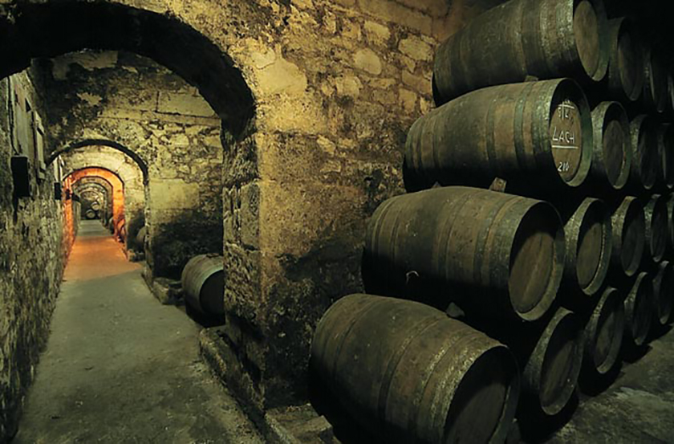Diploma de Honor en la Exposición de Burdeos
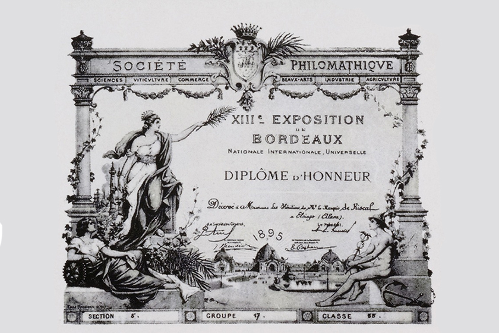Primeros Vinos Blancos en Rueda
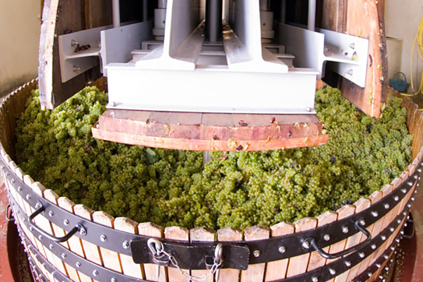Impulsor de la Denominación de Origen Rueda

Barón de Chirel,Primer Vino de Autor de Marqués de Riscal
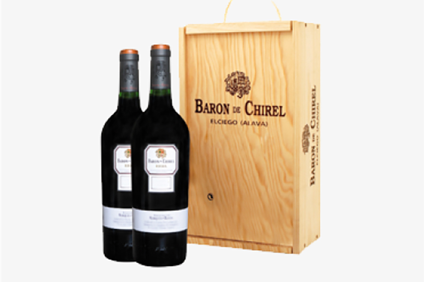Implantació de la Primera Mesa de Selección de la Rioja
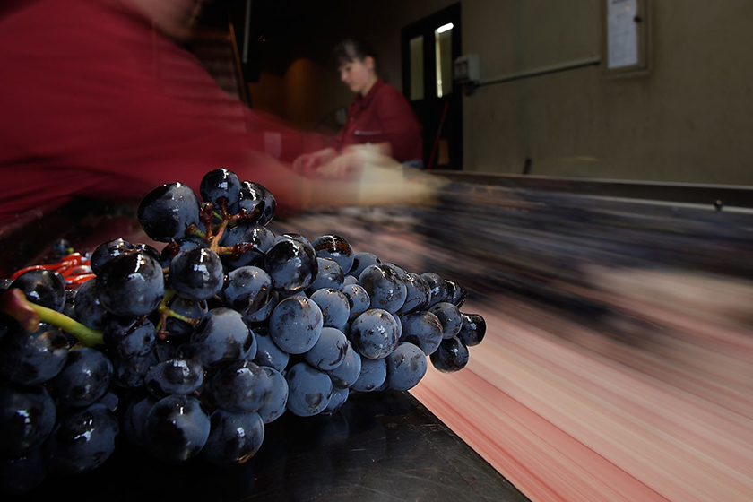Primera Añada de Riscal 1860
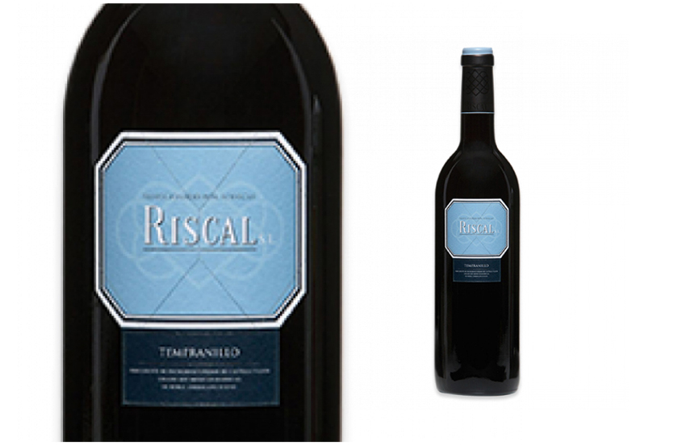Proyecto 2000, Ciudad del Vino
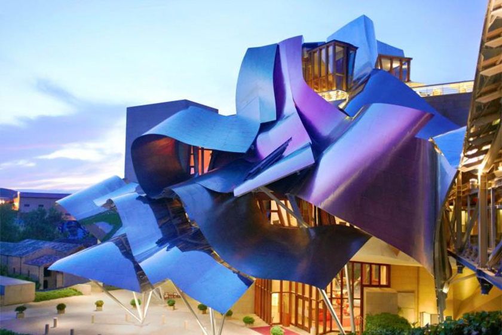Inauguración Ciudad del Vino
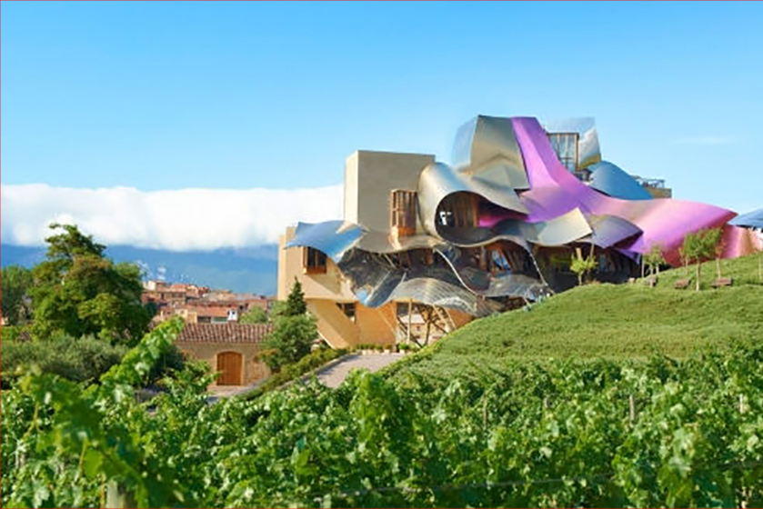150 Aniversario de Marqués de Riscal
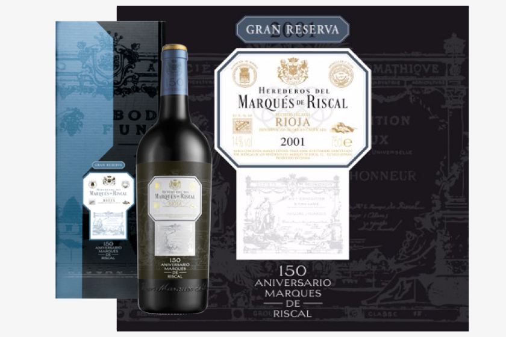Lanzamiento Finca Torrea y Finca Montico
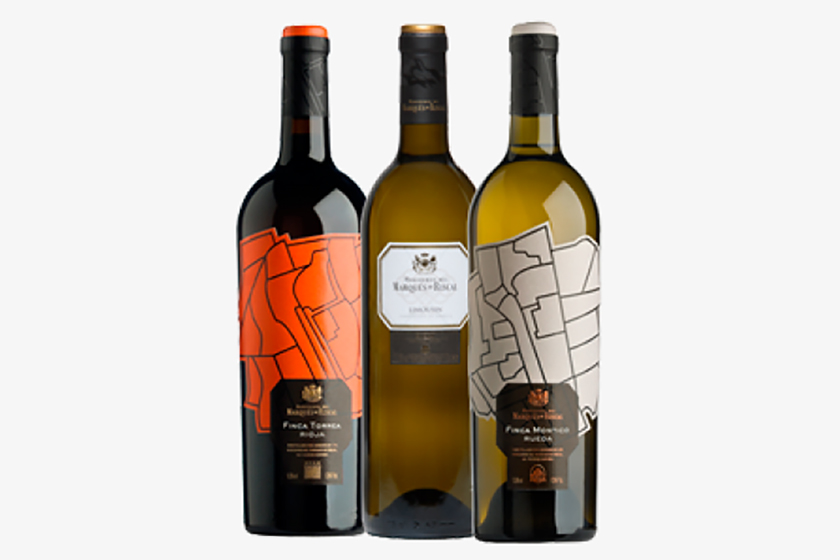Compra de la Bodega Pernord Ricard
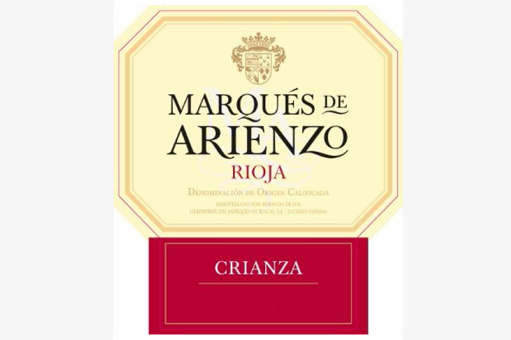Implementación de Nuevas Tecnologías
Estrella Michedivn
Entre las 10 mejores Marcas
Marqués de Riscal la Mejor Bodega Europea por la revista Wine Enthusiast
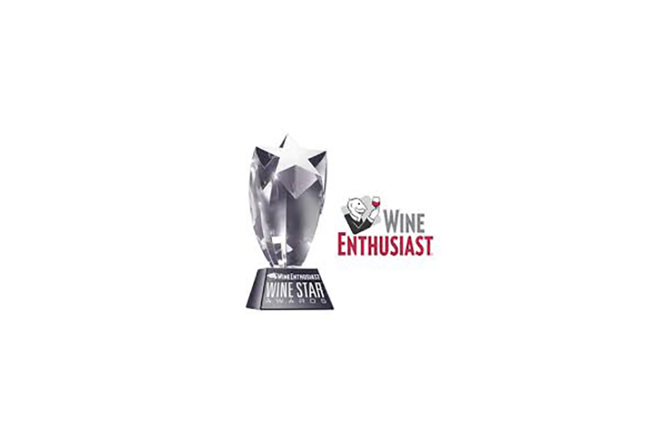